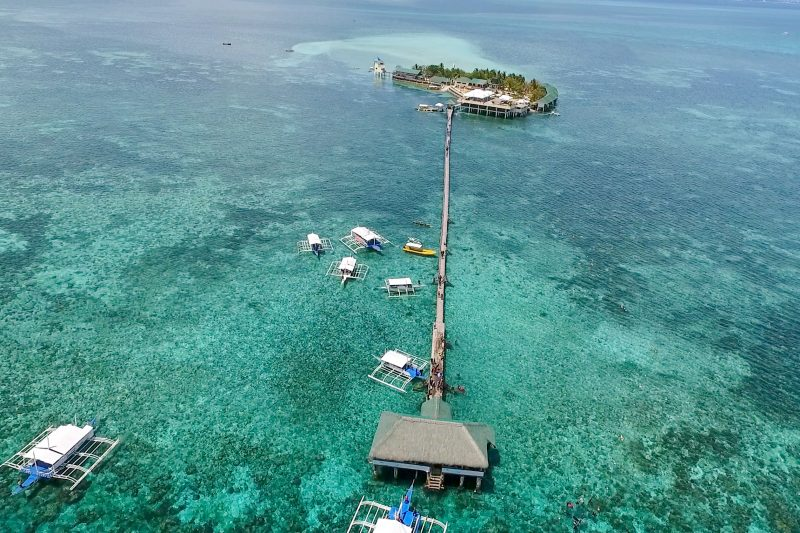

カオハガン島（Caohagan Island）
マクタン島から約60分。日本人が所有していることで有名。オランゴ環礁に属する島の一つ。
ヒルトゥガン島（Gilutongan Island）
マクタン島から約30分。ダイビングスポットとして世界的にも有名。マクタン島から近いことも人気の一つ。
パンダノン島（Pandanon Island）
マクタン島から約1時間 「天国に一番近い島」として有名なパンダノン島。少し離れていますが、訪れる価値は十分。
ナスアン島（Nalusuan Island）
マクタン島から約30分 海はサンゴ海洋保護区に指定されていて、海の透明度は非常に高く写真映えするスポットがたくさんある。
